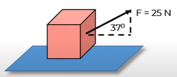
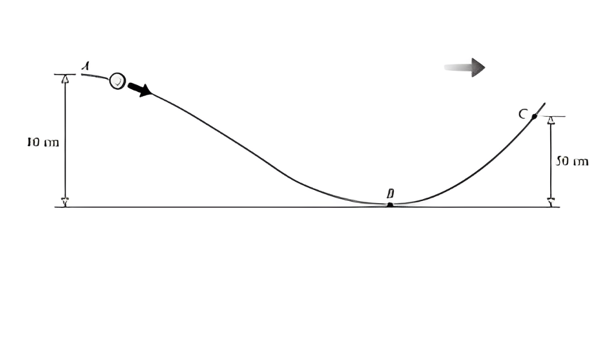
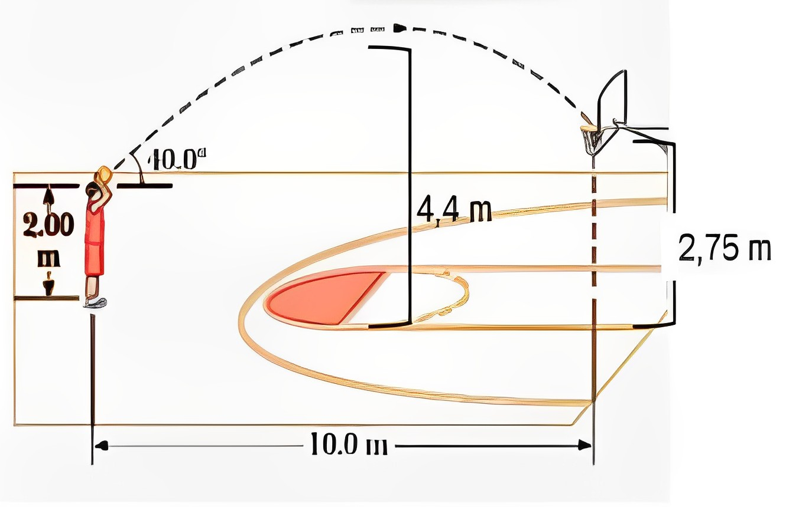

-
Balok bermassa \(10\) kg berada di atas lantai licin seperti gambar. Balok ditarik dengan gaya \(F = 25\) N membentuk sudut \(37^\circ\) terhadap arah horizontal.
Setelah berpindah ke kanan \(2\) m, besar usaha oleh gaya \(F\) sebesar..

-
Sebuah benda \(1\) kg dilemparkan ke atas dengan kecepatan awal \(40\) m/s. Besar energi kinetik benda pada saat mencapai ketinggian \(20\) m dari tanah sebesar…
-
Saat sebuah peluru ditembakkan vertikal ke atas dari permukaan tanah, berlaku :
1) Di permukaan tanah energi kinetik minimum
2) Di permukaan tanah energi potensial maksimum
3) Di titik tertinggi, energi kinetik maksimum
4) Di titik tertinggi, energi potensial maksimum
Dari pernyataan di atas yang benar adalah…

Sebuah manik-manik meluncur pada sebuah kawat A-C sepanjang \(250\) cm. Jika gaya-gaya gesekan diabaikan dan manik-manik memiliki kelajuan \(2\) m/s. Tentukan :
a. Berapa lajunya pada titik B
b. Berapa lajunya pada titik C
c. Jika massa manik-manik \(15\) gram dan terdapat gaya gesek sehingga benda terhenti saat mencapai titik C. Tentukan besarnya gaya gesek rata-rata
-
Perhatikan gerak bola basket (\(m = 600\) gram) berikut ini. Saat pertama dilempar kecepatan bola \(8\) m/s, saat mencapai titik tertinggi kecepatannya \(4\) m/s, dan saat mencapai ring kecepatannya \(7\) m/s. Berapa energi mekanik pada tiga posisi tersebut?

-
Karet dengan konstanta \(200\) N/m diregangkan sejauh \(20\) cm. Berapa besar energi potensial saat itu?
∧